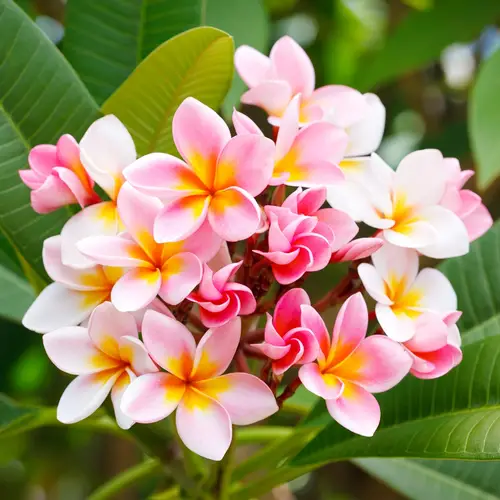
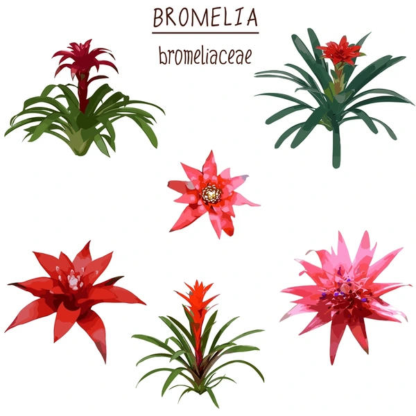
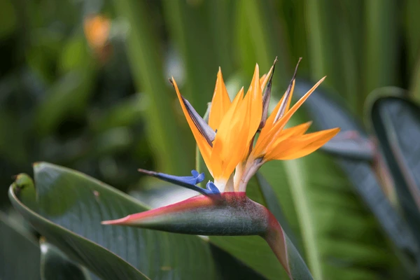

Las flores tropicales son famosas por sus colores brillantes y sus formas exóticas. Algunas de las más impresionantes son:
Estas flores son símbolos de la belleza y la exuberancia de los trópicos, añadiendo un toque de paraíso a cualquier jardín.
  